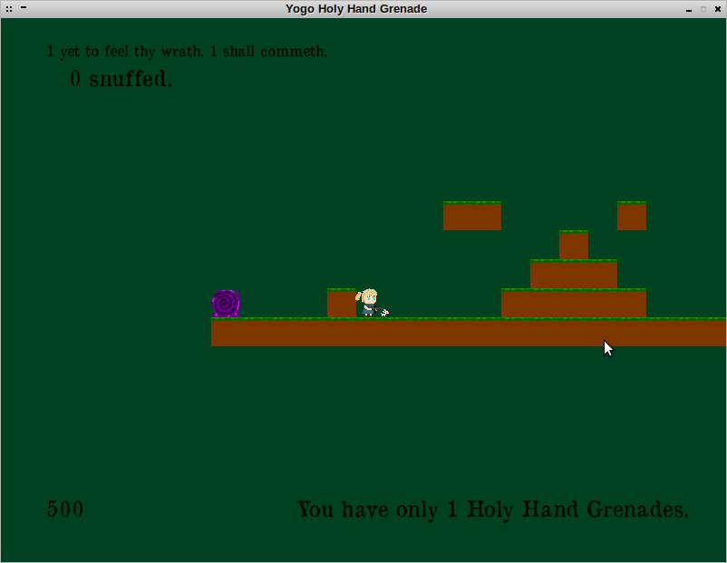
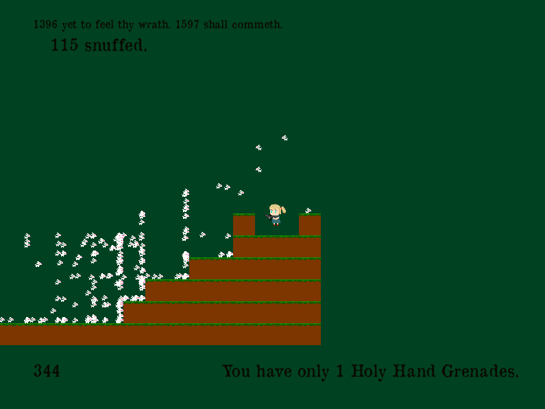
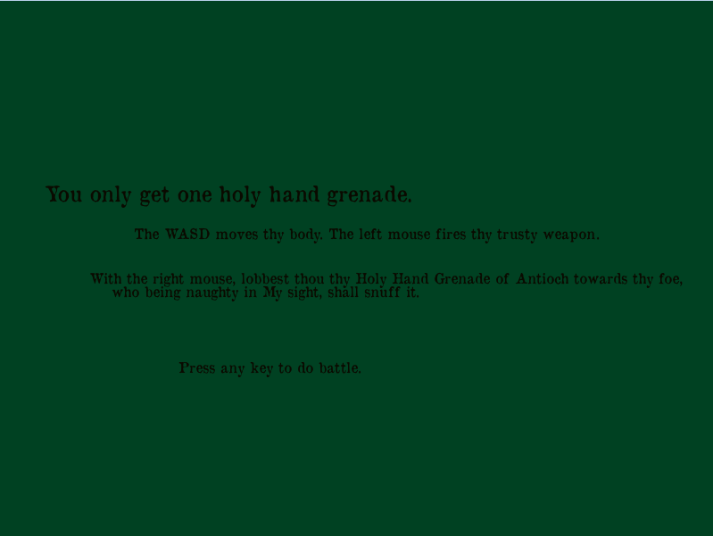

YOGO Grenade is a game written for Ludum Dare 28. The name Yogo Grenade is short for "You Only Get One Holy Hand Grenade." The goal of the game is to hold off a Fibonacci series of bunnies and to stay alive for as long as possible.

Figure 1. It's a vicious monster!I wrote this game for the Ludum Dare 28 Competition (Winter 2013), where the given challenge was to write a game within 48 hours while adhering to the theme "You Only Get One." Once completed, all contestants would play and rate each others' games.
The player character is a little girl with a machine gun in a blocky world. There is a purple portal where evil man-eating bunnies spawn. Every few seconds bunnies spawn in Fibonacci increments to overwhelm the player. In times of need the player can throw a single holy hand grenade which wipes out all the bunnies. The grenade throw is ultimately futile, since the Fibonacci increments become ridiculous over time. The game is heavily inspired by Monty Python and the Holy Grail.

Figure 2. Time to use that grenade.The player moves the character with the WAD keys for jump, move left, and move right, repectively. The player fires the machine gun with the left mouse button and throws the holy hand grenade with the right mouse button.

Figure 3. Welcome screen with instructions.You can also make your own levels! The map.txt file is an "ascii art" image of the level. 'M' are the wall tiles and, 'S' is the player spawn, and 'E' is Rabbit spawn. This turns the game into a kind of sandbox, since the player can build and defend their very own bunny fortresses. The original map.txt is shown below. You can see the map in its proper orientation by rotating it 90 degrees counter clockwise.
ME M M M MM M M M M M MS M MM MMM MMMM MMM MM M M M M M M M MM MMM MMM MMMM MMMM MMMMMM MMMMM MMMMM MMMMMM
I only knew C++ well at the time, so I chose to write the game in C++ with the Allegro game library. I chose to write a simple platformer for simplicity. Writing any game in C++ within 48 hours from scratch is difficult, since you spend a lot of time programming for the computer instead of programming for the game. After writing the game on Linux, I realized nobody could play the game because a majority of gamers are on Windows, so I hastily slapped my code into a Visual Studio project and ported the game to Windows (Allegro is cross-platform friendly).
I've compiled this on a 64-bit machine with Debian and Windows 7. The game may not run straight out of the box anymore. There also seems to be memory problems in the Windows version. I recommend compiling from source (it just needs liballegro) to ensure compatibility, but you can try the executables first.
You can find actual game and download links on the original Ludum Dare submission page. The source code is on Github here. The repository also has my compiled executables in the build folder.
The game is currently a dead project, since I am not likely to touch it again.
Written on the 31st of December in 2015. Happy New Year!
{kind=link}
{kind=link}
{kind=link}